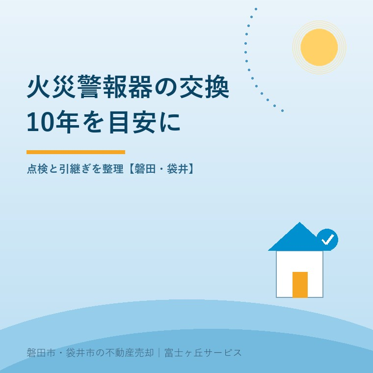
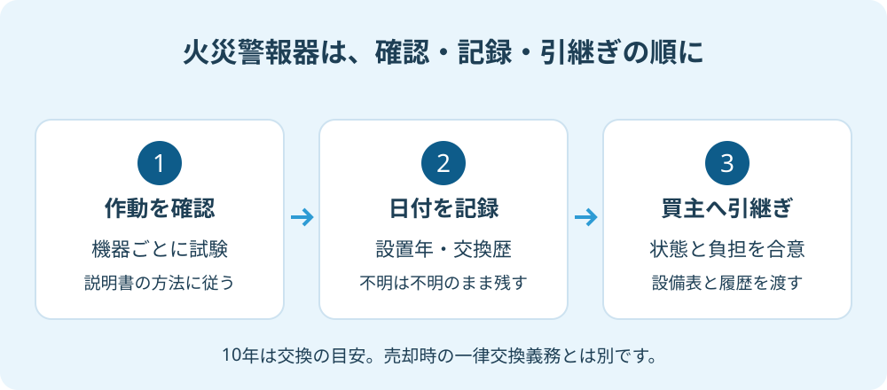

空き家の火災警報器｜10年交換と売却前の確認
2026年9月27日｜カテゴリ：空き家管理・住宅設備

この記事の要点
Q. 誰も住んでいない実家の火災警報器も、交換した方がいいですか？
空き家の火災警報器も作動を確認し、設置から10年を目安に交換を検討します。設置年・点検結果・交換履歴を残し、売却時は引継ぎ内容と費用負担を合意してください。10年は交換の目安で、売却時の一律交換義務を示すものではありません。磐田市・袋井市・森町では、富士ヶ丘サービスのような地域密着の会社に相談する選択肢もあります。
大石浩之（磐田市／不動産業）です。親が施設へ入った後の実家では、冷蔵庫や給湯器の電源は気になっても、天井の火災警報器は確認から抜けやすい設備です。売るか残すかが決まっていなくても、警報器の確認は進められます。査定のために家をきれいにする前に、機器の状態を説明できるようにしておきたいと私は考えます。
10年は交換の目安。売却の条件とは分ける
消防庁「住宅用火災警報器Q＆A」は、定期的な点検と、10年を目安にした交換を案内しています。秋の全国火災予防運動の期間は、毎年11月9日から15日です。2026年9月27日に確認した情報で、ページの公表日は記載されていません。運動の時期を待たず、次の実家訪問の予定に点検を加えられます。
10年という数字は、「10年目に売却できなくなる」という意味ではありません。この案内は住宅防火のための維持管理の説明であり、売買契約における設備交換の負担者を決めた資料ではないからです。管理の目安と、売主・買主が交わす約束は分けて読みます。
磐田市の「住宅用火災警報器」は、電池とともに機器本体も劣化するため、併せた交換を勧めています。電池を替えれば本体まで新品に戻るわけではありません。外見がきれいな機器でも、いつから使っているかを調べる意味があります。
ここで、空き家だから設置や維持管理の扱いを一律に決められる、と考えないでください。家族が時々泊まる家、完全に使用を止めた家、用途を変える家では、確認すべき条件が異なります。個別の設置場所や扱いは、建物の使い方を管轄消防署へ伝えて確認します。
空き家の点検は、音と日付を一緒に残す
空き家の火災警報器を点検するときは、取扱説明書に従って機器ごとの作動を確認し、その日付と結果を残します。消防庁は点検ボタンなどによる確認を案内しています。家に入った日だけを記録するより、何を確かめたのかが家族に伝わります。
私は、まず部屋ごとの一覧を作る方法を勧めます。例えば「1階の親の寝室」「2階階段の上部」のように、別の人が訪ねても探せる名前にします。写真は部屋の位置が分かるものと、本体表示が読めるものを分けます。写真を撮るために不安定な足場へ登る必要はありません。手が届かない機器は、取り付けを扱う業者に相談する欄へ回します。
| 記録する欄 | 残したい内容 |
|---|---|
| 場所・機器 | 部屋名、型番、台数。本体ごとに区別 |
| 設置・交換 | 分かる年月日と、その根拠。不明なら不明 |
| 作動確認 | 試験日、実施者、説明書に照らした結果 |
| 次の対応 | 交換相談、再確認、担当者と予定日 |
製造年と設置年は別の情報です。本体に2016年という表示があっても、何の年を示すかを確認せず「2016年に取り付けた」と書き換えません。領収書や説明書に設置日の記入があれば、その資料と一緒に保存します。記録が見つからない場合は、型番と表示の写真を販売店やメーカーに見せて判断材料を増やします。
作動しない場合も、音の意味が分からない場合も、「異常なし」の欄へ丸を付けません。説明書を確認し、必要な交換や相談へ進めます。掃除のために外した機器を、片付けの箱に入れたままにしない段取りも必要です。私なら、取り外した日と、復旧を確認する人を同じ欄に記します。
管理サービスに任せている家では、巡回という名前だけで室内設備の試験まで済んだと考えないことです。空き家管理サービスの契約前の5確認と照らし、点検対象、鍵の管理、報告の形式を確かめます。追加作業なら、費用を了承してから依頼します。

買主へ渡すのは、設置済みという一言より履歴
売却前の火災警報器の整理では、設備があること、確認できた状態、引渡しまでに行う作業を別々に書きます。付帯設備表などの契約関係書類へどう記載するかは、仲介会社と相談してください。設置済みの写真だけでは、作動や交換時期までは説明できません。
私は、点検記録を残す良い点は、売主が説明できる範囲を具体的にすることだと考えます。「2026年9月27日に試験し、説明書どおりの音を確認した」と「ずっと正常です」では、意味が違います。前者は確認日の事実を伝えられます。後者は、誰も見ていなかった期間まで問題がなかったように受け取られかねません。
その上で仲介会社へ注文したいのは、設備の説明を引渡し直前の口頭連絡だけで済ませないことです。売主が交換する案なら、対象の台数、作業日、費用負担を決めます。交換せず引き継ぐ案でも、不明な設置年や確認できなかった状態を消してはいけません。契約上どこまで約束するかを、双方が読める形にします。
内覧までに確認が終わらなければ、「確認予定」と伝え、予定日を示す方が誠実です。買主から尋ねられたとき、その場で新品同様だと答える必要はありません。磐田の売主が内覧前に整える準備でも、見た目の印象と説明資料を一緒に整えます。
点検表があれば、売主の責任がすべてなくなるわけでもありません。どの状態で引き渡すと合意したかが関わるためです。契約不適合責任の考え方を入口に、設備の対象範囲や特約を確認します。個別の契約責任は、法律の専門家に確認を。
売るかどうかは保留でいい。状態まで保留にしない
実家の売却判断と、火災警報器の状態確認は、同じ日に結論を出す必要がないと私は考えます。親の施設入居が決まっても、家族の気持ちや今後の使い方まで決まるとは限りません。確認の記録は、売る場合にも、家族が使い続ける場合にも渡せる材料です。
売るかどうかは保留でいい。警報器の状態まで保留にしない。これが私の考えです。新品へ替えたから売却を進めなければならない、という話ではありません。次に家へ入る人に「どれを、いつ確認したか」が渡せれば、今日の管理には意味があります。売却の決断を迫るために防火を持ち出す案内にはしません。
私自身、使い方が決まらない家に、どこまで設備費をかけるかは迷います。間もなく工事をする予定と、数年間そのまま保有する予定では段取りが変わるからです。ただ、予定が未定という理由で故障や年数不明を正常扱いすることはできません。現物の確認、必要な対応の相談、費用の比較の順で考えます。
警報器は査定額を上げるための飾りではありません。交換すれば高く売れる、と私は約束しません。家族が払った費用と、買主が住宅全体に付ける価格は別です。購入や設置を頼むなら、機器代と作業代、古い機器の扱いを分けた見積りにしてもらうと、何に支払うかが分かります。
磐田・袋井の実家は、次に入る人と確認日を決める
磐田市や袋井市の実家を離れて暮らすご家族は、次回の訪問担当と、現地で確かめる機器の一覧を先に共有します。磐田市の公式案内は、住宅用火災警報器の設置・維持管理の基準を市の火災予防条例で定めると説明しています。袋井市の家については、所在地の管轄消防署へ確認します。
家族の連絡メモには、鍵を受け取る人、写真を保存する場所、交換の相談先を一行ずつ書きます。現地へ行く人と費用を払う人が違うなら、作業を依頼する前に合意します。親の施設入居の手続きと同時期でも、担当が一人に集中しないようにするためです。
富士ヶ丘サービスでは、介護施設の運営から始めた不動産事業として、介護と実家の整理を一体で相談できます。磐田・袋井の現地確認と、ご家族の予定をつなぎ、家族が困らない売却を考えます。売却時期が決まっていなければ、まず管理記録の整理からで構いません。
- 本体の表示と説明書を確認し、設置年が分かるか調べる。
- 作動確認日と結果を、機器ごとに一枚へ記録する。
- 未確認・交換相談の機器について、担当者と次の確認日を決める。
よくある質問
空き家の火災警報器は、日常の管理と売買時の約束を分けて確認します。
- 売却するなら火災警報器を必ず新品にする必要がありますか？
- 消防庁の10年交換の案内だけでは、売却時に必ず新品へ替える義務があるとは判断できません。作動状況、設置年、交換歴を整理し、売買契約で引き渡す設備と費用負担を確認します。設置・維持管理の個別条件は管轄消防署へ、契約上の責任は仲介会社や法律の専門家へ確認してください。未確認の機器を正常とは伝えません。
- 設置した年が分からないときは、どう調べますか？
- 購入時の領収書、取扱説明書の書込み、本体の表示、家族の記録を順に確認します。製造年が分かっても、設置年と同じとは限りません。根拠が見つからなければ不明と記録し、型番と本体の写真を販売店やメーカーに見せて相談します。音が鳴ったことだけで使用年数を推測せず、交換した場合はその日付を残してください。
- 管理会社の巡回があれば、家族の確認は不要ですか？
- 巡回サービスが火災警報器の作動確認まで含むかは、契約書と作業報告の確認が必要です。外観点検だけの場合と、室内設備を扱う場合では依頼範囲が違います。誰が鍵を持ち、いつ試験し、異常時に誰へ連絡するかを決めてください。報告に点検日や機器ごとの結果がなければ、担当者へ作業範囲を尋ねるところから始めます。

この記事を書いた人：大石浩之（磐田市／不動産業・宅地建物取引士）
富士ヶ丘サービス株式会社。介護施設の運営から不動産事業を始め、磐田市・袋井市・森町で、介護と相続、実家の売却を一体で相談できる窓口を設けています。家族が困らない売却のため、資料と現地の条件を一件ずつ整理します。著者プロフィール
本記事は2026年9月27日時点の公開情報と筆者の意見です。制度・数値・手続きは変更されることがあります。個別の契約・税務・登記・相続の判断は、弁護士・税理士・司法書士などの専門家に確認を。